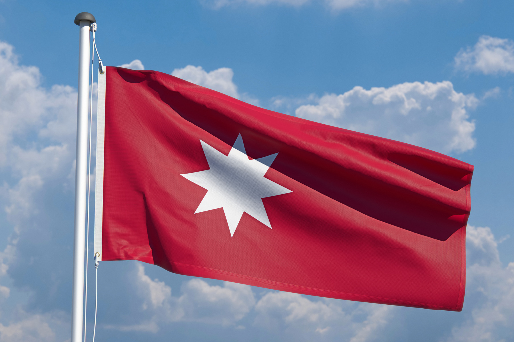
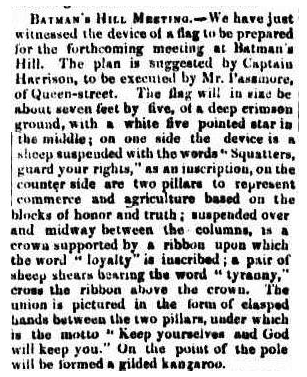
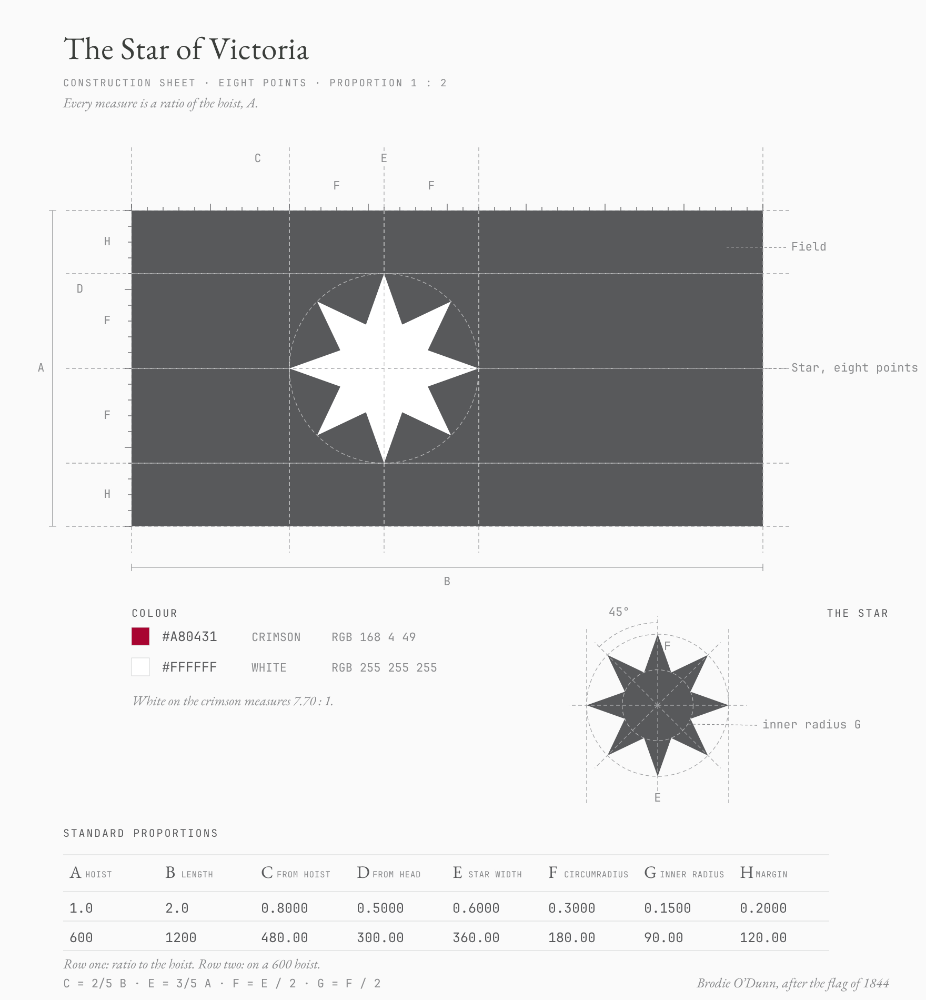

The Star of Victoria is a proposed state flag for Victoria, Australia: a crimson field with one white star, set toward the pole. It follows a flag made in 1844 for the Port Phillip District, now Victoria“Domestic Intelligence,” 1844. It would replace the present flag, a British Blue Ensign with the state badge added, in use since 1870Department of Premier and Cabinet [DPC], 2024. I drew it in 2026 with a star of five, seven or eight points.
Meaning
I believe a flag should say something about the people who fly it. This one is about family: parents, their children, and the ways those children go.
Crimson, for family
Crimson stands for family, the reason each of us exists. It fills the flag from edge to edge.
White, for belonging
White stands for belonging: peace and unity among the people who hold a family together.
The star, for choice
The star stands for choice: the power to run your own life. Its points face every way, because a person can go in any direction.
Proposal
The flag comes in three versions that differ in their star. Five points follow the flag of 1844, with the star in the middle as it was then“Domestic Intelligence,” 1844. Seven follow the Australian National FlagDepartment of the Prime Minister and Cabinet [PM&C], 2022, p. 65. Eight follow the Eureka FlagPM&C, 2022, and eight is the version I prefer.



Justification
I based the Star of Victoria on a flag that Victoria has already flown. In 1844 Captain Harrison planned a flag for a public meeting on Batman’s Hill in Melbourne“Domestic Intelligence,” 1844. The people who met there wanted the Port Phillip District, now Victoria, separated from New South Wales“Flag of Victoria,” 2026. I have redrawn their flag for the state.
The Port Phillip Gazette described that flag before the meeting. It was “of a deep crimson ground, with a white five pointed star in the middle”“Domestic Intelligence,” 1844. It also carried a sheep, two pillars, a crown, a pair of shears and two mottoes. I kept the ground and the star and left the rest.
Victoria needs a flag of its own because it shares the present one. That flag is the Blue Ensign, a British naval flag, with the state badge added. Britain set this pattern for every Australian colony in 1865DPC, 2024, and only the badge tells the six state flags apartPM&C, 2022, p. 46. The crimson flag is 21 years older than that pattern.
The rest is mine. I moved the star toward the pole, the part of a flag that stays in view when the wind drops. I made the crimson deep, so that the white star stands out in any light. Victoria could adopt it.
Inspiration

This report is the only description of the flag of 1844 that I have used. The plan was Captain Harrison’s, and Mr Passmore of Queen Street was to make the flag“Domestic Intelligence,” 1844. The five-point version of my flag keeps its star in the middle, as theirs was. The report reads:
Batman’s Hill Meeting.—We have just witnessed the device of a flag to be prepared for the forthcoming meeting at Batman’s Hill. The plan is suggested by Captain Harrison, to be executed by Mr. Passmore, of Queen-street. The flag will in size be about seven feet by five, of a deep crimson ground, with a white five pointed star in the middle; on one side the device is a sheep suspended with the words “Squatters, guard your rights,” as an inscription, on the counter side are two pillars to represent commerce and agriculture based on the blocks of honor and truth; suspended over and midway between the columns, is a crown supported by a ribbon upon which the word “loyalty” is inscribed; a pair of sheep shears bearing the word “tyranny,” cross the ribbon above the crown. The union is pictured in the form of clasped hands between the two pillars, under which is the motto “Keep yourselves and God will keep you.” On the point of the pole will be formed a gilded kangaroo.
Construction
The construction sheet gives every measure needed to draw the flag.



| Proportion | 1:2, height to length |
|---|---|
| Star | One, white, one point up. It stands in a circle three fifths of the height across. Its centre is two fifths of the length from the pole and halfway down. |
| Points | Eight, inner radius 1/2 of the outer. Options: seven (4/9), or five (0.382) in the middle of the flag. |
| Colours | #A80431 #FFFFFF |
| Making | The reverse is a mirror image. Heading 3 to 5% of the length. |
I set the crimson by its contrast with the star. White on it measures 7.70:1. That is past 7:1, the strictest contrast that web accessibility guidelines ask of textWorld Wide Web Consortium [W3C], 2018. The margin keeps the star clear in shade and in print.
References
- Department of Premier and Cabinet. (2024, August 26). About the Victorian flag. Victorian Government. https://www.vic.gov.au/about-victorian-flag
- Department of the Prime Minister and Cabinet. (2022). Australian flags (3rd ed.). Commonwealth of Australia. https://www.pmc.gov.au/sites/default/files/resource/download/australian-flags-booklet-2024-11-18.pdf
- Domestic intelligence. (1844, May 29). Port Phillip Gazette, 2. https://trove.nla.gov.au/newspaper/article/224809628
- Flag of Victoria (state). (2026, February 23). In Wikipedia. https://en.wikipedia.org/w/index.php?title=Flag_of_Victoria_(state)&oldid=1339988444
- World Wide Web Consortium. (2018). Web content accessibility guidelines (WCAG) 2.1. https://www.w3.org/TR/WCAG21/
Rights
The seven-point and eight-point versions are my own designs, and I keep the rights to them. The five-point version is my drawing of the flag of 1844, and anyone may use it. The Government of Victoria has not endorsed this proposal.
The newspaper clipping is out of copyright. Typefaces keep their makers’ licences. Questions: brodie2015@icloud.com.